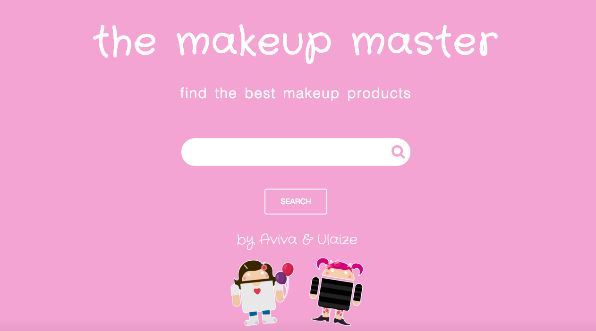

For our final projects at DecodeMTL, we worked in small groups to create web applications that would demonstrate some of the skills that were acquired throughout the class.
My partner and myself worked on a project called The Makeup Master. This project is the beginning of a makeup review website. On the back-end, an existing Elasticsearch database of makeup data was cleaned up to make it more relevant. The original discovery of the data was done using Kibana to find patterns in the data, followed by a scripted cleanup and filtering. On the front-end, a single-page application communicates with an API linked to Elasticsearch, and displays search results accompanied by Youtube Video Search API results.
For more projects, please feel free to check out my Github page.